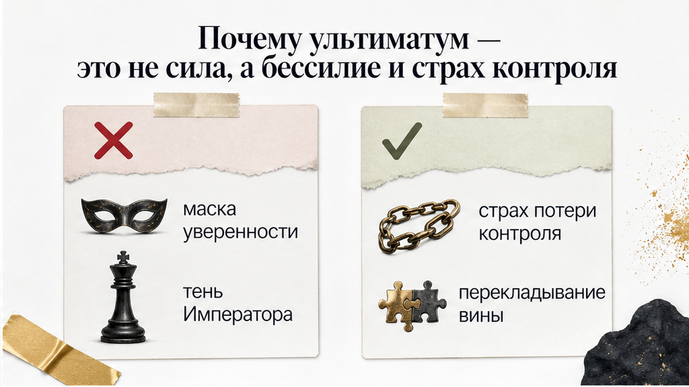
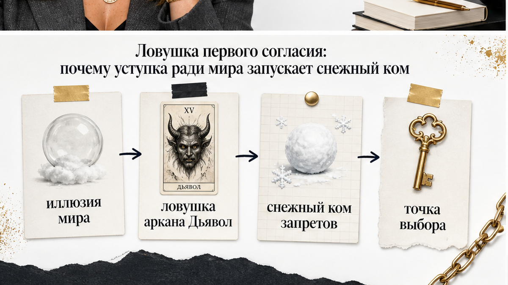
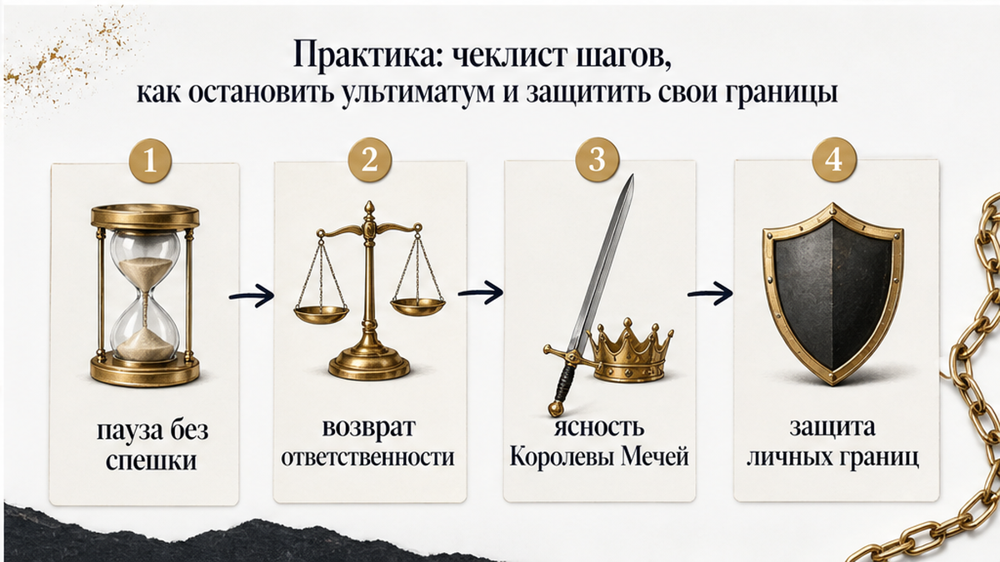

Разговор на кухне обрывается на полуслове, чашка с остывшим чаем замирает в руке, а в воздухе повисает ледяное: «Или ты удаляешь эту страницу и прекращаешь общаться со своими подругами, или мы расходимся». Либо в мессенджере всплывает короткое категоричное сообщение посреди рабочего дня: «Выбирай: либо твоя работа и задержки, либо семья, третьего не дано».
В этот момент земля уходит из-под ног, а в груди разливается глухой холод. Первая реакция — паника и удушающее желание немедленно всё исправить, лишь бы не остаться перед закрытой дверью. Но следом накатывает жгучая обида: тебя только что поставили к стенке. Партнёр при этом держится с невозмутимой правотой и заранее сбрасывает с себя вину: «Это не я разрушаю союз, это ты делаешь свой выбор».
Ультиматум в отношениях — это не проявление мужской силы, твёрдых принципов или искренней заботы. Это инструмент силового давления, попытка переложить на тебя ответственность за возможный разрыв и навязать свои правила игры. Мужчина прибегает к шантажу не от избытка уверенности, а от панического страха собственной уязвимости.
Когда в доме звучат подобные условия, главное — выдохнуть и не соглашаться на автопилоте. Карты таро не залезают в чужую голову, но они мгновенно подсвечивают скрытую механику происходящего. Ты можешь задать им три прямых вопроса:
Сразу к делу: если почва уходит из-под ног и нужно трезво оценить баланс сил в паре, сделай 3 бесплатных расклада в боте Макс — триплет или крест покажут скрытую динамику отношений без иллюзий.
Если давление длится неделями и тебе нужен подробный анализ скрытых рычагов манипуляции, открой расклад «Суть – Тень – Вектор» и послушай аудиоразбор связок карт в приложении ВКонтакте или в приложении Макс.

Мужчина, бросающий ультиматум, внешне выглядит несокрушимой скалой. Он говорит жёстко, уверенно и не допускает возражений. Но психология отношений устроена иначе: потребность диктовать условия и держать партнёршу в ежовых рукавицах рождается не от внутренней силы, а от глубинного бессилия. Чем сильнее человек стремится к власти и доминированию в паре, тем меньше в этих отношениях остаётся пространства для настоящей эмоциональной близости.
Партнёр, который шантажирует расставанием, не умеет и боится договариваться на равных. Живая, независимая женщина с собственными интересами и мнением вызывает у него тревогу, с которой он не справляется. Единственный способ заглушить этот страх — попытаться взять под контроль твоё время, телефон, окружение и мысли. Внешние запреты становятся для него суррогатом уверенности: если ты подчиняешься, значит, угрозы нет.
Анатомия ультиматума коварна. Мужчина заранее занимает удобную позу безупречного судьи. Формула «если ты не сделаешь так, как я сказал, мы разойдёмся» полностью снимает с него ответственность за будущее отношений. Он как будто заявляет: «Если мы расстанемся, виновата будешь ты сама, ведь это ты отказалась выполнить условие». Вся тяжесть выбора и груз вины сгружаются на твои плечи.
Нередко этот контроль заворачивают в красивую обёртку «искренней заботы»: «Я требую уйти с этой работы, потому что ты переутомляешься», «Не общайся с этими подругами, они тебе завидуют». Отличить заботу от грубой манипуляции просто: настоящая забота всегда оставляет за тобой право сказать «спасибо, но я решу сама» и уважает твой выбор. Манипуляция при малейшем отказе взрывается холодом, агрессией или хлопнувшей дверью.
В раскладах таро эту деструктивную модель вскрывает теневая сторона аркана Император. Это архетип жёсткого диктата, когда мужчина пытается превратить отношения в казарму с нерушимым уставом из-за панического страха потерять контроль. Рядом с ним часто выходит Король Мечей — символ холодного, эмоционально глухого рассудка. Такой человек заворачивает своё давление в обёртку «железной логики и здравого смысла», цинично обесценивая твои переживания и вынося безапелляционные приговоры.

Когда над головой висит угроза разрыва, возникает отчаянное желание сдаться. Кажется, что проще удалить страницу, отменить встречу, отказаться от любимого дела — лишь бы прекратить этот кошмар, снять напряжение и вернуть в дом тепло. Но уступка под дулом ультиматума активирует безжалостный механизм условной любви: «Я принимаю тебя только тогда, когда ты удобная и послушная».
Это бьёт в самую болезненную женскую точку — страх отвержения и въевшуюся установку «меня полюбят, только если я буду хорошей». В итоге ты оказываешься в ловушке вечного обслуживания чужих ожиданий, судорожно доказывая своё право на уважение.
Главная опасность в том, что первое согласие никогда не приносит обещанного покоя. Наоборот, оно запускает лавину новых требований. Для мужчины твоя капитуляция становится чётким сигналом: рычаг работает, шантаж приносит результат. Формируется устойчивая привычка давления. Сегодня он потребовал прекратить дружбу, завтра начнёт критиковать твою одежду, а через месяц запретит любые увлечения, пока всё пространство твоей жизни не сожмётся до узкого коридора его одобрения.
В таро этот капкан иллюзорного спасения олицетворяет аркан Дьявол. Это классическая схема эмоциональной зависимости, где крючком служит твой страх остаться одной. Женщина добровольно надевает на себя цепи чужих запретов, надеясь выкупить мир, но расплачивается собственной личностью.
В этот момент перед тобой встаёт Двойка Жезлов — точка осознанного выбора и перекрёсток воли. Ты оказываешься на развилке: остаться в безопасной, но удушающей клетке чужих условий или выбрать себя, опереться на собственное достоинство и шагнуть в неизвестность, сохранив свой суверенитет.

Чтобы выбраться из-под прессинга и не сломать отношения на эмоциях, начни с главного — проведи черту между здоровой личной границей и манипулятивным ультиматумом:
Если тебе выставили условие, используй пошаговый алгоритм защиты:
Твоей внутренней опорой в этот момент становится Королева Мечей. Это символ зрелой ясности, трезвого ума и непоколебимой защиты своих границ. Меч Королевы безжалостно отсекает эмоциональный туман, навязанное чувство вины и детский страх. Это спокойная позиция взрослой женщины: ты слышишь слова мужчины, но отказываешься подчинять свою жизнь чужому страху.
Личная граница описывает твои собственные действия: «Если на меня кричат, я выхожу из комнаты». Она никого не принуждает и ничем не шантажирует. Ультиматум, напротив, диктует поведение другому человеку («сделай то, что я сказал») и наказывает угрозой расставания за несогласие.
Потому что первая уступка подтверждает: шантаж работает. Мужчина понимает, что страх потери для тебя сильнее собственного достоинства. Вместо мира ты получаешь закреплённый сценарий, где при любом будущем разногласии в ход пойдёт угроза собрать вещи, а список требований станет только длиннее.
Посмотри на его реакцию, когда ты мягко говоришь «нет». Настоящая забота уважает право человека отказаться от совета или помощи. Если в ответ на твой отказ льются упрёки в неблагодарности, холодное отчуждение или угрозы разорвать союз — перед тобой контроль, замаскированный под опеку.
Не беги следом, не умоляй остаться и не сдавай свои границы в панике. Демонстративный сбор вещей и глухая молчанка — это продолжение того же спектакля, рассчитанное на твой испуг. Сохраняй спокойствие Королевы Мечей: дай человеку прожить последствия его собственных решений. Если мужчина готов перечеркнуть союз только потому, что ты не захотела жить по указке, ценностью для него были не ваши отношения, а твоё послушание.
Отношения, которые держатся на страхе расставания и бесконечных уступках, неизбежно выжигают изнутри. Настоящая близость возможна только там, где есть взаимное уважение к свободе и праву быть собой. Если ты чувствуешь, что почва уходит из-под ног, а требования партнёра методично сжимают твою жизнь, самое время остановиться и увидеть ситуацию со стороны.
Сними груз сомнений и верни себе контроль над собственной жизнью: